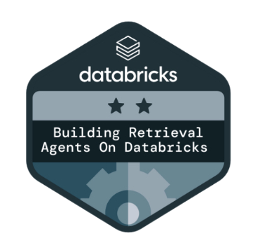
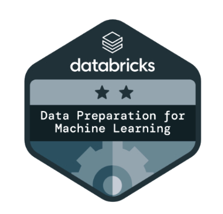
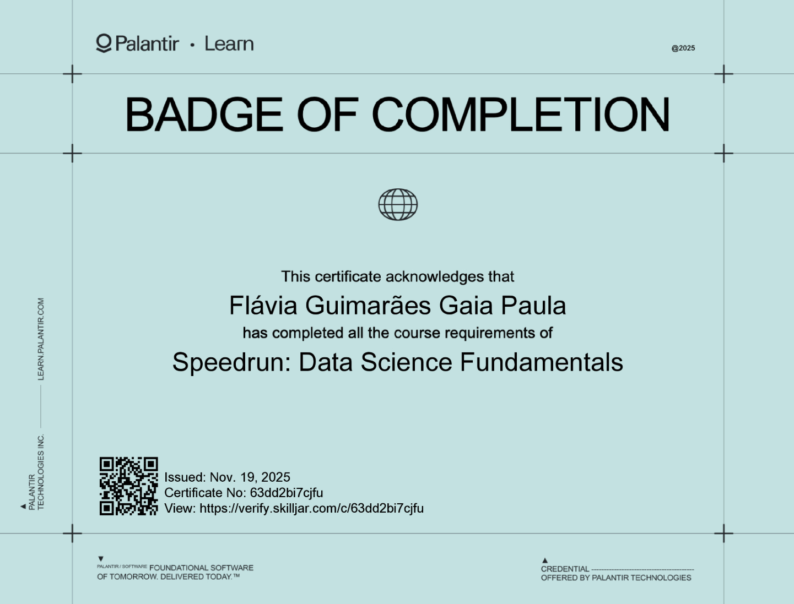
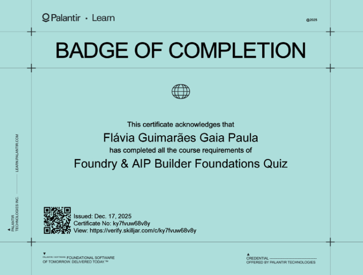

AI applied to critical workflows
I have experience with audit automation, contract reading, clause extraction, regulatory compliance and technical information retrieval using LLMs and multi-agent systems.
Recruiter Introduction
I am Flávia, a Senior Data Scientist with 6 years of experience in AI, data and automation. My work combines Generative AI, NLP, machine learning and the full data process that supports data science, from structure and data quality to modeling, automation and real-world application.
Executive Summary
I have experience with audit automation, contract reading, clause extraction, regulatory compliance and technical information retrieval using LLMs and multi-agent systems.
I work with Python, Spark, Databricks, Delta Lake, MLflow, Streamlit, LangChain and governance-oriented pipelines designed for monitoring and production.
Alongside hands-on delivery, I keep strong technical content, recent Data Engineering certifications and academic research in Data Science.
Professional Journey
Role: Senior Data Scientist
Structured an analytics environment in Azure and Databricks with Medallion Architecture, scalable pipelines, governance and a strong foundation for audit and intelligence use cases.
Role: Senior Data Scientist / Senior AI Engineer
Built an intelligent payment calendar system from PDF contracts using LangChain, CrewAI, Databricks Workflows and Delta Lake.
Role: AI-focused Data Scientist
Created LLM-based solutions for technical PDF extraction, regulatory RAG, Streamlit validation flows, MLflow versioning and autonomous agents.
Role: Data Scientist / AI Specialist
Worked on machine learning, NLP, technical data extraction, Streamlit, few-shot prompting and the evolution from regex pipelines to LLM-based solutions.
Role: Data Analyst
Analyzed large government datasets such as Bolsa Família, BPC and Cadastro Único using Big Data, SQL, Python scripts and analytical dashboards for decision support.
Role: Data Science Intern
Automated news collection with web scraping, used NLP with spaCy for NER and summarization, built Power BI visualizations and explored experimental deep learning projects.
Areas of Practice
Development of solutions with LLMs, RAG, agents and structured workflows for extraction, analysis, automation and decision support in corporate contexts.
Experience with classification, supervised models, natural language processing, embeddings, deep learning and applications focused on text, documents and unstructured data.
Design of analytics environments, scalable pipelines, governance, data quality and modern architecture to support analytics, machine learning and AI.
Exploratory analysis, dataset reconciliation, dashboards, monitoring and translation of data into clear insights for technical, operational and business teams.
Education and Credentials
Master's in Applied Computing at UnB, MBA in Artificial Intelligence and Big Data at USP, and a Bachelor's in Data Science and Artificial Intelligence at IESB.
Data Science research line focused on named entity recognition in legal texts, supported by a strong base in databases, large-scale data mining and applied experimentation.
Recent certifications in Airflow, Spark, Snowflake, BigQuery, Modern Data Stack and Databricks tracks connected to data preparation for machine learning and retrieval agents.
Highlighted Credentials

Badge tied to machine learning tracks and modern data ecosystems.

Building retrieval agents and applied workflows within the Databricks ecosystem.

Training focused on building data solutions and operations on enterprise platforms.

Complementary foundation in AI applications and workflows in the Palantir ecosystem.
Data Architect 4.0 training with 360 hours, plus focused certifications in Spark, Airflow, BigQuery, Snowflake and Data Engineering fundamentals.
Tracks completed in March 2026 in Data Preparation for Machine Learning and Building Retrieval Agents on Databricks.
Certification in Introduction to LangGraph, an academic talk on ChatGPT at USP and additional tracks focused on applied AI solutions.
Petrobras courses in LGPD, information security, information classification and handling, human rights, conflict of interest and anti-discrimination.
Academic Experience
In my undergraduate capstone, I developed two spaCy models fine-tuned in Brazilian Portuguese for named entity recognition in the legal domain, using the LeNER-Br dataset and publishing a working application on Hugging Face.
In my MBA thesis, I developed and validated a convolutional neural network model to classify chest X-ray images, focused on supporting COVID-19 diagnosis.
Digital Presence
Contact
I am always open to new opportunities.